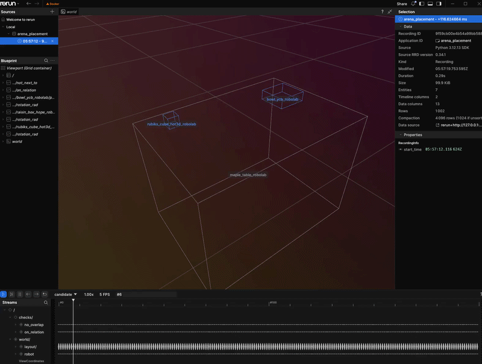
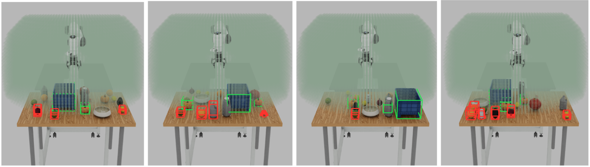
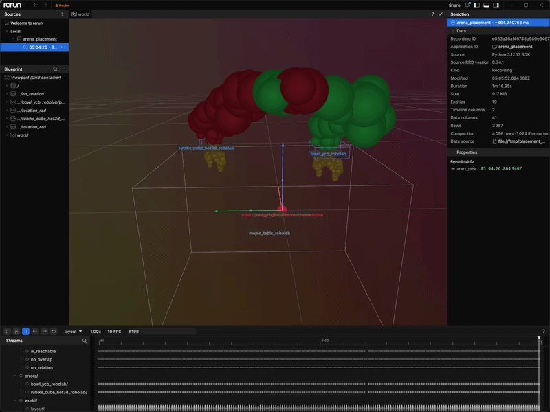

Placement Validation#
The solver (Placement Solver) minimizes a continuous loss over relations and
collisions. A low loss does not guarantee that a relation holds exactly, that
a robot can reach a target, or that a property the loss never encoded is
satisfied. Validators are the pass/fail layer on top of that output: each
re-checks one property of a solved candidate and reports True/False,
independent of the loss value.
The solver asks how to reduce violations; a validator asks whether a specific candidate actually satisfies the property it checks. Validation is also where constraints the solver never optimizes enter the pipeline, for example IK reachability.
How Validation Fits Placement#
ObjectPlacer builds its validator list once from every registered check
that passes is_available() and survives enabled_checks (see
Enabling and Disabling Checks). Each solved batch then runs in two passes:
Inexpensive checks (
no_overlap,on_relation,clutter_on_relation,next_to,not_next_to,face_to) over every candidate.Expensive checks (
ik_reachable) only on candidates that already passed every required inexpensive check.
A PlacementCandidate is one working layout of all placement objects in one
environment. It stores the objects’ positions, orientations and bounds, plus the
environment ID and sample ID. Solving updates that same candidate’s positions and
loss; validation replaces its check results. These stages update the working batch
in place and return None.
PlacementCandidateBatch groups these layouts. For example, four environments
with ten attempts each produce a batch of forty candidates. Filtering and ranking
select and reorder references to complete candidates, keeping their geometry and
results together.
PlacementCandidateGenerator samples orientations, fits the bounds to those
rotations and places clutter above its support and nearby objects before solving.
After solving, ObjectPlacer applies FaceTo headings and refits the bounds.
PlacementValidationRunner then replaces each candidate’s check results.
Here, expensive means computational cost, such as solving IK. Neither validation
pass steps physics.
Verdicts land in each candidate’s PlacementValidationResults. A
required check must pass for the candidate to count as valid; an
optional (enabled but not required) check still runs and is reported, but
does not invalidate the layout. PooledObjectPlacer
(Pooled Placement) uses these results to rank candidates and to
reject-and-refill until each environment has enough valid layouts. By default,
if the final refill batch still has no valid candidate, Arena can store a
best-loss layout that failed required checks
(allow_best_loss_fallbacks=True); see Pooled Placement.
Pre-physics and offline post-physics validators share the PlacementValidator
base for check names and stages. They have separate inputs: solved candidate
batches before physics, measured scene state after physics. See
Post-Physics Checks for Recordings for offline acceptance checks.
Types of Validators#
Check ( |
Stage |
Cost |
Enabled by default |
What it checks |
|---|---|---|---|---|
|
Build-time |
Inexpensive |
Yes |
No two placed bounding boxes (or collision meshes in |
|
Build-time |
Inexpensive |
Yes |
Every |
|
Build-time |
Inexpensive |
Yes |
Every |
|
Build-time |
Inexpensive |
Yes |
Every |
|
Build-time |
Inexpensive |
Yes |
Every |
|
Build-time |
Inexpensive |
Yes |
Every |
|
Build-time |
Expensive |
When available |
cuRobo IK can reach a top-down grasp at every
|
Geometric and Relation Checks#
no_overlap, on_relation, clutter_on_relation, next_to,
not_next_to, and face_to are always registered. The first five mirror the corresponding
relation’s loss term, so low-loss solver output and validator verdicts stay
consistent. face_to is different: FaceTo is applied as a post-solve
heading rather than a continuous loss, and the check only verifies that a
facing yaw was computed. A check for a relation kind unused in the
environment passes trivially.
Set debug_visualize=True (or placer_params.debug_visualize: true in
YAML) to inspect candidates in a Rerun
viewer:


Base debug view: anchors in gray, movable objects in blue. The
checks/ stream plots per-candidate pass/fail for the inexpensive
geometric checks.#
IK Reachability (ik_reachable)#


ik_reachable gates only objects marked RequiresReachability
(green). Distractors outside the reachable volume may appear red for
illustration, but they never reject the layout.#
ReachabilityValidator lives in the optional isaaclab_arena_curobo
extension. It registers when that package imports successfully and the
embodiment has a cuRobo config (e.g. Droid). ArenaEnvBuilder wires
the env’s embodiment into reachability_config automatically.
It gates only objects marked RequiresReachability — a relation that tasks
such as PickAndPlaceTask stamp automatically. With no such relation, the
check passes trivially. Grasp offset and IK tolerances are configurable; see
Environment Definition.


With debug_visualize on, green spheres mark a reachable,
collision-free grasp; red marks a failure that rejects the candidate.#
Enabling and Disabling Checks#
Two concepts control the build-time checks: which checks run
(enabled_checks) and, of those, which must pass for a layout to be
valid (required_checks). By default every registered check runs and is
required — so when cuRobo is available, ik_reachable gates placement
automatically. Making a check optional (enabled but not required) keeps it
running and reported without rejecting layouts, which is the usual way to
keep placement geometry-only.
Both are set on ObjectPlacerParams in Python or the placer_params block
in YAML; see Environment Definition.
Post-Physics Checks for Recordings#
The placement recorder advances physics
for settle.num_steps environment steps before checking the final state.
All required solver checks and enabled, applicable post-physics checks must pass. The post-physics checks share one settling pass:
Check |
Measures |
Default limit |
|---|---|---|
|
Final linear and angular speed of every root, including the robot. |
0.1 m/s and 0.1 rad/s |
|
Initial-to-final root translation and rotation, excluding intentional
|
2 mm and 2 degrees |
|
Task-object link motion relative to its root, excluding robot embodiments. |
2 mm and 2 degrees |
|
Final clutter bounds relative to the support footprint and minimum resting height. |
No overhang; 1 cm below the minimum height |
Configure a limit with
settle.validators.<check>.<setting>=<value>. An inapplicable or disabled
check is recorded as skipped. At least one applicable post-physics check must
remain enabled.
Clutter Recording Checks#
Scenes using ClutterOn automatically include support_containment. The
clutter objects must be dynamic rigid bodies with gravity enabled, and scene
gravity must point downward along world Z. Supports must carry IsAnchor
and have static or kinematic collision geometry, with no tilt and a yaw that is
a multiple of 90 degrees. IsAnchor fixes the placement solve; physics mobility
is a separate requirement. Resolve every non-clutter placement relation to a
fixed anchor before collection, including destination fixtures.
Release candidates must pass no_overlap and clutter_on_relation.
ClutterOn objects cannot require reachability because settling changes the
poses checked by the solver. Containment checks the full support footprint,
independent of the release region’s spread. Acceptance establishes the
configured checks; it does not establish graspability or policy success.
Support Floor Height#
Flat supports use their verified top surface as the minimum resting height. Containers need an explicit local-Z height so objects can settle below the rim:
+settle.validators.support_containment.minimum_resting_heights_m.bowl=-0.025
The key is the support’s runtime scene name. The value is measured in metres in
the scaled support-local frame before world translation and must lie within the
support’s local Z bounds. For kinematic_bowl_ycb_robolab, -0.025 is
approximately the inner floor.
Containment compares bounding-box footprints and heights. It does not establish exact containment inside curved walls or detect every object-wall penetration.
Fix Setup and Replay Errors#
Use these actions when scene construction, release solving or replay fails. Check the named asset or setting before changing physics duration or acceptance limits.
Failure |
Action |
|---|---|
Unknown registry entry or unavailable asset |
Import the external package’s registration modules before loading its environment. Check the registry name, asset path and asset access from the runtime that runs the recorder. |
Support is not an anchor, or is dynamic |
Set a fixed pose and |
Unresolved non-clutter placement |
Resolve every non-clutter asset with placement relations to a fixed pose and anchor, including fixtures unrelated to the clutter support. Resolve object sets to concrete assets before collection. |
Unsupported support orientation or tilted mesh release |
Keep supports upright at multiples of 90 degrees in yaw. For clutter
with roll or pitch, set the object’s |
Release footprint cannot fit |
Compare the rotated object bounds with |
Missing flat surface, unknown support key or invalid floor height |
Inspect enabled colliders or select an |
Existing output path |
Choose a new JSONL path. Recording refuses to overwrite an existing file. |
Replay seed conflict, missing roots or incompatible resets |
Remove explicit |
Understand the Rejection Summary#
The recorder excludes rejected layouts and prints each rejection reason. If
max_batches is exhausted before min_layouts is reached, any accepted
layouts are still written and the command logs the shortfall. No file is written
when no layouts pass. A normal command exit or an existing output file does not
mean the requested count was reached; compare the accepted count with
min_layouts.
Each Rejected line gives a reason and the number of layouts rejected for it.
When a pose-shift limit is exceeded, the message includes the object, measured
translation and rotation, and configured limits. Use the named check to decide
what to adjust:
Rejection |
Meaning |
What to check or change |
|---|---|---|
|
A layout failed a required solver check. |
Read earlier solver diagnostics and check relation constraints and collision geometry. Increasing settling time cannot fix a solver failure. |
|
Final root velocity is too high. |
Inspect contacts and support. Increase |
|
A non-clutter root moved or rotated beyond its limits. |
Inspect the named object. For |
|
A task-object link shifted relative to its root. |
Check joint initialization and contacts. Root-pose replay cannot restore the changed joint configuration. |
|
Settled clutter fell off, fell through or left the support footprint. |
Check support geometry, the configured minimum resting height and the containment margin. |
|
A required pre-physics result is unavailable. |
Enable the required validator or fix its dependencies and source configuration. |
See Relations and Strategies for relation settings. Change validation limits under
settle.validators only when the new tolerance fits your evaluation.
Increasing max_batches allows more attempts without changing which checks
layouts must pass.
Custom Validators#
Pre-Physics Validators#
Pre-physics validators check the solver’s proposed layout before physics is advanced. Subclass
PrePhysicsPlacementValidator and register a unique check name which should be included in
ObjectPlacerParams.enabled_checks. Return one boolean per candidate, in batch order. For
example, reject layouts with any object origin above 1.5 metres:
from isaaclab_arena.relations.validation.pre_physics import PrePhysicsPlacementValidator
from isaaclab_arena.relations.validation.registry import register_validator
@register_validator
class MaxOriginHeightValidator(PrePhysicsPlacementValidator):
check = "max_origin_height"
def validate_batch(self, batch, collision_objects):
verdicts = []
for candidate in batch.candidates:
below_limit = all(
position[2] <= 1.5 for position in candidate.positions.values()
)
verdicts.append(below_limit)
return verdicts
Import the module defining this class before constructing ObjectPlacer.
Default settings run and require the registered check. If enabled_checks is
explicit, include "max_origin_height" to run it.
Post-Physics Validators#
Subclass PostPhysicsPlacementValidator to check captured measurements after
settling. Return one report per entry in batch.env_ids, in the same order.
self.report includes the validator’s settings, verdict and rejection reason.
Save this example as placement_validators.py in the repository root. It checks
the final height of every recorded root, including the robot, in metres relative
to the local environment origin:
import math
from dataclasses import dataclass
from typing import ClassVar
from isaaclab_arena.offline_placement.post_physics_validation import (
PostPhysicsPlacementValidator,
)
from isaaclab_arena.offline_placement.settled_batch import SettledBatch
from isaaclab_arena.relations.validation.types import PlacementValidatorReport
@dataclass
class MaxRootHeightValidator(PostPhysicsPlacementValidator):
check: ClassVar[str] = "max_root_height"
max_height_m: float = 1.5
"""Maximum final root height in the local environment frame, in metres."""
def validate(self, batch: SettledBatch) -> list[PlacementValidatorReport]:
reports = []
for env_id in batch.env_ids:
reason = ""
for key, poses in batch.final_root_poses.items():
height_m = poses[env_id, 2].item()
if not math.isfinite(height_m) or height_m > self.max_height_m:
reason = (
f"{key}: final root height {height_m:g} m; "
f"limit {self.max_height_m:g} m"
)
break
reports.append(self.report(passed=not bool(reason), reason=reason))
return reports
Run the recorder from the repository root, adding that directory to
PYTHONPATH so Hydra can import the module:
PYTHONPATH="$PWD${PYTHONPATH:+:$PYTHONPATH}" \
python isaaclab_arena/scripts/record_placement_layouts.py \
env_spec=isaaclab_arena_environments/robolab/tasks/clamp_in_right_bin.yaml \
output=outputs/placements/clamp_custom.jsonl \
num_envs=4 env_spacing=2 min_layouts=16 max_batches=5 seed=42 \
settle.num_steps=120 \
settle.validators.pose_shift.max_translation_m=0.015 \
+settle.validators.max_root_height._target_=placement_validators.MaxRootHeightValidator \
+settle.validators.max_root_height.max_height_m=1.5 \
render=false --device cpu --viz none
The configuration key (max_root_height) must match the class’s check name.
Hydra loads post-physics validators through _target_; no @register_validator
decorator is needed. This command adds the custom check alongside the default
checks. Every enabled, applicable check must pass for a layout to be recorded.
Next Steps#
Continue to Pooled Placement for how Arena ranks, stores, and reuses layouts that pass these checks.